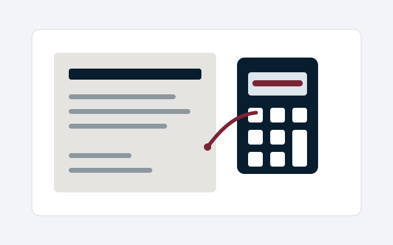

Standard boundary
One substantially complete tender for one opportunity/lot, using the frozen authoritative tender and evaluation source set.
Commercial & financial operations · HOC-024
Give a substantially complete tender an evidence-honest final challenge against the supplied requirements and evaluation criteria so the bidder can decide what to correct before submission without outsourcing the bid.
For: SMEs and VCSEs bidding for contracts

The need
Bidders need an independent structured challenge of a substantially completed tender before submission.
The service
Give a substantially complete tender an evidence-honest final challenge against the supplied requirements and evaluation criteria so the bidder can decide what to correct before submission without outsourcing the bid.
The work is delivered as a bounded professional service. The exact scope is agreed before commitment and does not transfer the customer’s own decision-making authority to House of Carol.
Deliverables
Method
Scope, inputs and timing
One substantially complete tender for one opportunity/lot, using the frozen authoritative tender and evaluation source set.
The standard review requires the complete accepted pack normally at least three working days before the tender deadline.
Boundaries
No guarantee of a particular business, funding, compliance, procurement, learning, revenue, productivity or other outcome is created beyond the exact bounded product record and evidence available.
Any wider or materially different work requires explicit re-scoping and may trigger additional specialist assurance.
Specialist boundary
Customer authority remains with the customer. Accounting, tax, regulated credit, legal enforcement, public-procurement or other regulated matters are outside the ordinary service unless separately competent and authorised.
Evidence and availability
Paid delivery is currently unavailable while the required professional-risk arrangement remains unresolved. This page does not imply that the hold has been lifted.
Internal, synthetic, planning-price and Customer 000 evidence is not presented as buyer demand, willingness to pay, accepted price, live customer value, repeatability, revenue or external proof.
Related navigation